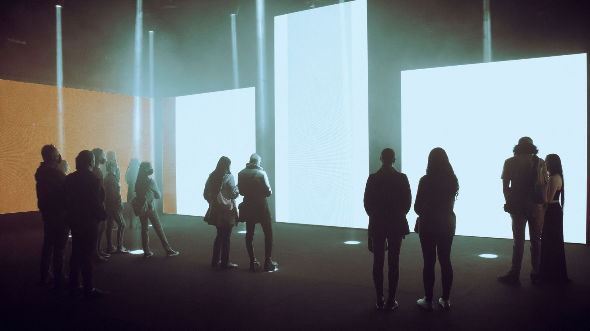
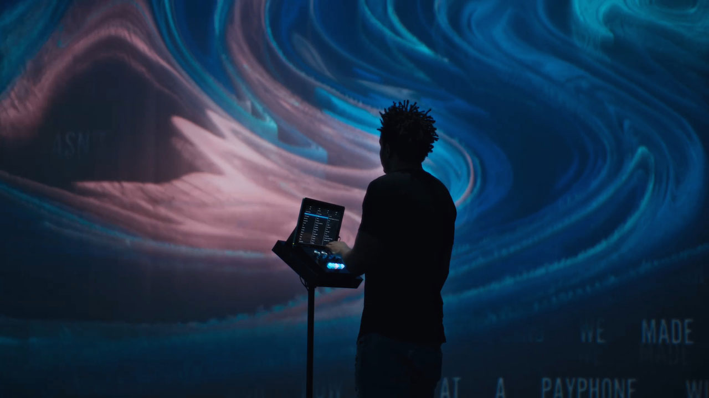
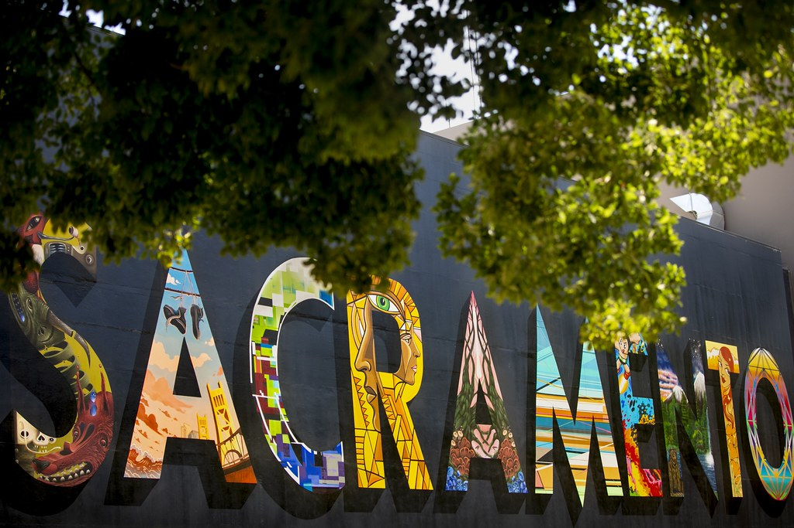
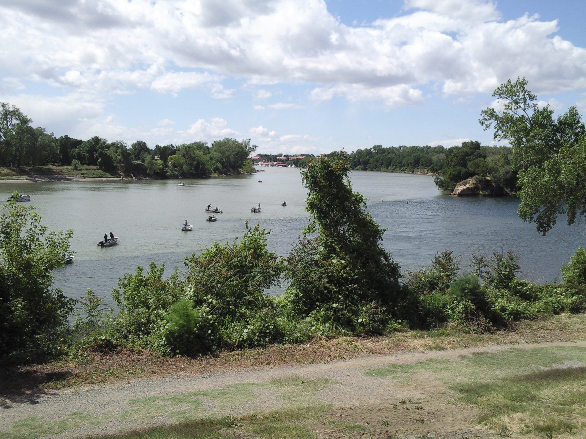
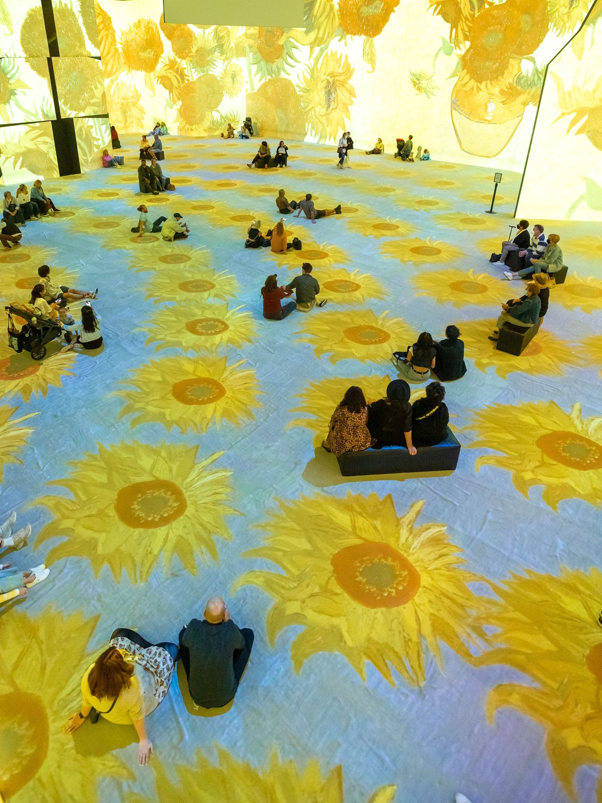

Generative color field
Sacramento / river-grid light engine
Made where the rivers meet.
Digital artworks, immersive environments, and generative visual systems made in Sacramento.
Confluence Digital Arts creates gallery-grade digital canvases, projection-mapped environments, and generative visual systems for institutions, brands, public spaces, and immersive rooms.
38.5816° N / 121.4944° W
CANVAS FIELD CDA-01

Immersive room / LED wall

Projection calibration

Public-space media study
Studio positioning
Sacramento as medium.
Sacramento is not used as tourist decoration. It is treated as a visual system: river paths, flood memory, civic grids, golden agricultural light, public art, and neighborhood creative culture.
Sacramento has spent decades treating art as civic infrastructure, from its long-running public-art program to its creative-economy planning. We build digital work that can live in that same public, cultural, and commercial space.

Four commission formats
Technical art formats for rooms, surfaces, networks, and public space.
Public Light Works
Projection-mapped civic pieces, media facades, plazas, cultural events, and architectural surfaces.
Materials: TouchDesigner / projection mapping / LED playback / generative systems
Gallery + Immersive Rooms
LED walls, multi-channel video, black-box installations, responsive sound/light environments, and exhibition systems.
Materials: real-time rendering / sensor input / calibration / playback systems
Generative Brand Worlds
Real-time motion identities, campaign visuals, data-driven brand films, launch environments, and live event graphics.
Materials: generative systems / real-time rendering / data input / LED canvases
Web3 / Networked Art
Browser-native 3D pieces, token-gated editions where appropriate, interactive collections, and real-time visual systems.
Materials: web-native 3D / interactive systems / edition logic / sensor input
Selected works
Portfolio proof as installation labels.
No client-logo theater. Each work is documented by surface, system, material, and the kind of room it holds.

CDA / 04.01
River Index No. 04
Generative LED triptych for a downtown Sacramento cultural lobby.
Materials: real-time water data, 3-channel LED, custom playback system.
CDA / 04.02
Golden Hour Machine
Interactive brand environment for a California design conference.
Materials: depth sensor, projection scrim, live particle field.
CDA / 04.03
Grid After Flood
Projection-mapped public-art study referencing Sacramento's raised streets and flood history.
Materials: archival grid geometry, mapped facade, generative motion score.
CDA / 04.04
Latent Orchard
AI-assisted moving-image installation for hospitality and event spaces.
Materials: machine-learning image synthesis, 6K loop system, ambient sound bed.
Process
From site survey to living system.
We do not drop animations onto walls. We design the relationship between site, audience, hardware, story, and motion.
- 01 Site + story audit
- 02 Visual system design
- 03 Prototype / motion studies
- 04 Technical mapping
- 05 Installation / launch
- 06 Maintenance / versioning
Studio intake
Tell us the surface, the audience, the deadline, and the feeling you need the room to hold.
Start a commissionInstitution / brand / venue / architect / public agency
Indoor / outdoor / gallery / web / live event
Timeline / location / technical constraints